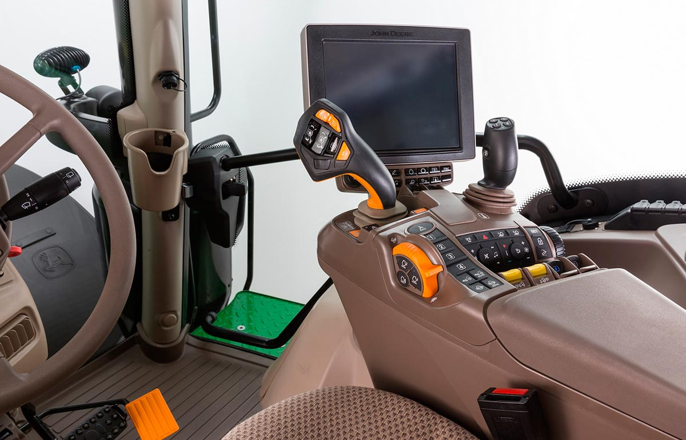

CommandPro, trabaja e innova
El sistema CommandPRO de John Deere es una innovadora tecnología que ha revolucionado la industria agrícola al proporcionar a los agricultores un control avanzado y una experiencia de conducción más eficiente y cómoda. Este sistema representa un cambio significativo en la forma en que los agricultores interactúan con sus tractores y maquinaria al combinar la tecnología moderna con la facilidad de uso. Como se puede apreciar este compuesto de un mando muy ergonómico el cual consta de 11 botones totalmente personalizables además de la palanca que posee movimientos en las 4 direcciones ,cada una de ellas aportando un movimiento distinto. CommandPro ofrece un sistema de control del tractor que integra muchas funciones que son necesarias en los tractores en un solo mando, lo que facilita de manera significativa las tareas de labrado de los campos con maquinaria agrícola. Este tipo de mando hace que la interacción de la persona con el control del tractor y sus accesorios sea muy sencilla y rápida al recaer en un solo mando con diferentes funcionalidades

Funcionamiento
CommandPro consta de un sistema de interacción del conductor con los diferentes sistemas del tractor que permite el manejo total de la maquinaria agrícola mediante este. Este sistema permite la personalización del diferente botones , permitiendo así que el conductor posea la mayor comodidad posible, sin prácticamente mover la mano, aportando así una interacción sencilla y con la mayor rapidez posible. Además de la interacción mediante los botones el mando posee varias posiciones de manejo del tractor : Con el movimiento para adelante del mando el tractor circularía para adelante estableciendo un nivel de velocidad equivalente a la fuerza ejercida sobre el mando. De la misma manera pero accionando la palanca hacia detrás , podríamos realizar la programación de velocidad para adelante. Con el movimiento del mando hacia la izquierda cambiaríamos la dirección del movimiento del tractor hacia el lado contrario al que estemos circulando Si realizamos el movimiento del mando hacia la derecha , activaríamos el control crucero del vehículo con el que podremos programar la velocidad de circulación del vehículo a una establecida en la pantalla , y también podremos editar la velocidad de crucero mediante botones. Además también posee combinaciones de teclas para aportar aún más funciones al mando e incluso podremos programar movimientos automáticos del tractor , por ejemplo, podremos establecer que cuando accionemos un botón el apero además de subir , se pliegue y corte la toma de fuerza. John deere en un su web permite acceder a un tutorial de uso :john deere
Adaptabilidad
Este mando no solo interaccionara con la persona que maneja el vehículo , sino que también se enlazara con los distintos sistemas del tractor para ofrecer un conjunto de manejo aún más completo. Mediante la pantalla del tractor estableceremos las programaciones personalizadas de los botones y podremos cambiarlas de manera muy sencilla. Además también podremos establecer una velocidad de crucero de manera fácil y tendremos las diferentes visualizaciones de los movimientos en la pantalla. Además este tipo de mando se podría combinar con otro joystick para el movimiento de la cargadora frontal, que permitirá el control prácticamente total que permite mediante un mando el manejo de la parte trasera y delante del tractor.
Conclusion
En conclusión , este elemento de interacción de la persona con el vehículo hacer que esta se sienta muy cómoda a la hora de trabajas y le permitirá ahorrar tiempo de trabajo, haciendo de un simple mando una herramienta de labrado de la tierra. Además ofrece una ventaja sobre los competidores ya que permite mucha más comodidad que los métodos originales de botones y palanca distribuidos a lo largo del tractor.